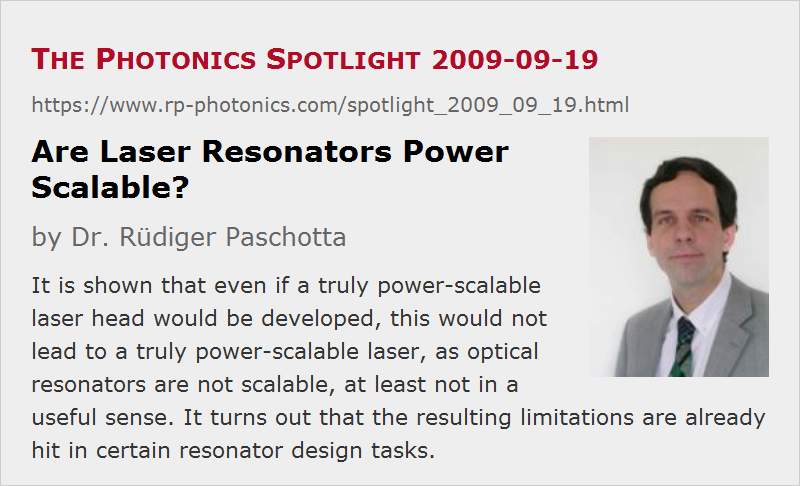

Are Laser Resonators Power Scalable?
Posted on 2009-09-19 as a part of the Photonics Spotlight (available as e-mail newsletter!)
Permanent link: https://www.rp-photonics.com/spotlight_2009_09_19.html
Author: Dr. Rüdiger Paschotta, RP Photonics Consulting GmbH
Abstract: It is shown that even if a truly power-scalable laser head would be developed, this would not lead to a truly power-scalable laser, as optical resonators are not scalable, at least not in a useful sense. It turns out that the resulting limitations are already hit in certain resonator design tasks.

Ref.: R. Paschotta, “Power scalability as a precise concept for the evaluation of laser architectures” in arXiv.org, see arXiv:0711.3987v1; encyclopedia article on power scaling of lasers
When power scaling of lasers is discussed in the scientific literature, this is usually done without caring what exactly the term “power scaling” should mean. I criticized this before, and delivered a clear and meaningful definition in the open-access paper as referenced above. I also demonstrated that a lot of useful thoughts arise when one uses the term with a well-defined meaning.
The issues considered in the context of power scaling of lasers are nearly always directly associated with the laser gain medium. It is clear why: this is the place where the biggest challenges have been encountered so far. However, an interesting question is the following. Assume we could find and realize a gain medium which is truly power-scalable, which means that there is a systematic scaling procedure for realizing any output power without increasing any of the challenges (such as thermal effects, optical damage, etc.). Would that imply that we have power-scalable lasers? Perhaps surprisingly, the answer is no, at least if we demand a high beam quality of the output. And the reason for that is related to the properties of laser resonators.
A Scaling Procedure for Resonators
Well, optical resonators are scalable in a certain sense. Start with a certain resonator design and apply the following procedure:
- Increase all arm lengths by some factor s.
- Increase all curvature radii of mirrors by the same factor, also the focal lengths of any lenses and other (de)focusing elements, including the thermal lens of the gain medium.
As a result, all beam radii will increase by the square root of s, and the beam areas will s times higher than before, assuming that the optical wavelength stays unchanged. The stability zones of the resonator in terms of thermal lensing will look the same as before, if the scaling of the dioptric powers is adjusted accordingly.
So this procedure allows you to realize arbitrarily large mode areas. In that way you can keep the optical intensities constant when going up with the output power by a factor s2. The gain medium must scale such that the dioptric power is reduced in proportion to s−1. That condition is not unrealistic; for example, a thin-disk laser head meets it as long as stress effects are negligible.
There are serious caveats, however:
- The resonator length will scale in proportion to the output power. If 0.1 m, for example, is a reasonable length for a 1-W laser, a 1-kW laser would need a 100 m long resonator – not exactly convenient. And if it is a Q-switched laser, the pulse duration will also scale in proportion to the power.
- The alignment sensitivity of the resonator increases with the scaling. Well, for larger beams we can tolerate accordingly larger beam offsets resulting from unwanted mirror misalignment. However, it turns out that still the misalignment angles would have to scale in proportion to s−1.
A Theoretical Solution: Wavelength Scaling
Is there a way out? Well, yes, but not a realistic one. Instead of the procedure described above, keep all arm lengths, mirror curvatures and dioptric powers constant, but increase the wavelength of laser emission by a factor of s2. That will increase the mode areas by the same factor. The alignment sensitivity even goes down, so we can tolerate angular errors of the mirrors which are larger by the factor s.
The obvious caveat here is that we can not simply scale the wavelength. There are no wavelength-scalable gain media, and the applications can not live with arbitrarily long wavelengths.
Conclusions
This analysis leads to important conclusions. First of all, laser resonators are not power-scalable, at least if we do not allow to scale up the resonator length and scale down the alignment errors. Somebody may object: I don't care, my main problems are not with the resonators, but with the gain media and laser heads. Well, that may be so for now. However, if we look ahead, we find that we will face a problem with resonators even if we develop a truly power-scalable laser head.
I would like to emphasize that the problems resulting from this issue are not something far away. Actually, I hit them already when developing high-power laser resonators for some of my customers. It happens that they want a resonator with a combination of nice features:
- large mode areas on all mirrors, in order not to kill these in Q-switched operation
- limited resonator length for reasons of compactness and possibly also a short pulse duration
- low alignment sensitivity
I am perfectly equipped with resonator design software which allows me to find the best possible solution, but there are hard physical limits which cannot be pushed away with software. The best one can do in this situation is to develop a good understanding of the limitations.
This article is a posting of the Photonics Spotlight, authored by Dr. Rüdiger Paschotta. You may link to this page and cite it, because its location is permanent. See also the RP Photonics Encyclopedia.
Note that you can also receive the articles in the form of a newsletter or with an RSS feed.
Questions and Comments from Users
Here you can submit questions and comments. As far as they get accepted by the author, they will appear above this paragraph together with the author’s answer. The author will decide on acceptance based on certain criteria. Essentially, the issue must be of sufficiently broad interest.
Please do not enter personal data here; we would otherwise delete it soon. (See also our privacy declaration.) If you wish to receive personal feedback or consultancy from the author, please contact him e.g. via e-mail.
By submitting the information, you give your consent to the potential publication of your inputs on our website according to our rules. (If you later retract your consent, we will delete those inputs.) As your inputs are first reviewed by the author, they may be published with some delay.
|  |
If you like this page, please share the link with your friends and colleagues, e.g. via social media:
These sharing buttons are implemented in a privacy-friendly way!